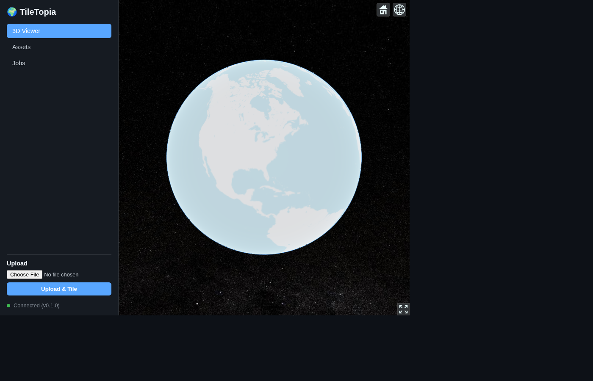
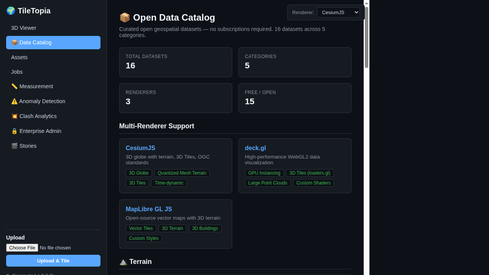

TileTopia
Self-hosted 3D Tiles server, an open-source alternative to Cesium Ion. It tiles point clouds, meshes, IFC and vector files, and serves quantized-mesh terrain.
6
Rust crates
1.1
OGC 3D Tiles
Self-hosted 3D Tiles server, an open-source alternative to Cesium Ion. It tiles point clouds, meshes, IFC and vector files, and serves quantized-mesh terrain.
What this server does today. Also working and not in the table: STAC search, COG windows, webhook delivery, scheduled jobs, kriging, geoprocessing, elevation, terrain analysis, static maps and API keys.
| Capability | TileTopia | Cesium Ion |
|---|---|---|
| Point cloud, mesh and CAD inputs | LAS, LAZ, E57, PLY, glTF, GLB, OBJ, FBX, DAE, CityGML, IFC | Includes LAS, LAZ, glTF, FBX, DAE, OBJ, CityGML, IFC, RVT, DWG, DXF, DGN |
| Vector inputs | GeoJSON, GeoPackage, KML, through mago-3d-tiler | Includes GeoJSON, TopoJSON, KML, CZML |
| Outputs | 3D Tiles 1.1, quantized-mesh, terrain-RGB, XYZ imagery PNG tiles, DEM analysis PNG tiles, PMTiles vector tiles with the martin feature | 3D Tiles 1.0 and 1.1, TMS and WMTS, quantized-mesh, GLB |
| Tile compression | meshopt or Draco on mesh geometry, KTX2 on mesh textures | Includes Draco, meshopt, KTX2 |
| Accounts | Organizations, with admin, editor and viewer roles | Teams |
| Stories | Stored on the server, shared by token, played in the dashboard. The dashboard has no story editor | Stories |
| MCP server | None | Hosted, since 2026-10-12 |
| Self-hosting | AGPL-3.0 binary or Docker image | Cesium ion Self-Hosted, for commercial buyers, on Kubernetes |
| Presence, cursors, chat | WebSocket relay | Not found in Ion's docs |
TileTopia is one AGPL binary you run. What answers fixed example data is listed under "What does not work". The Cesium Ion column was read on 2026-11-04 from tiler data formats, pricing and the Cesium blog.

CesiumJS dashboard streaming 3D Tiles from this server

Asset catalog in the dashboard
tiletopia/ ├── crates/ │ ├── tiletopia-core/ # Octree tiling engine, LOD, .pnts and .glb writers │ ├── tiletopia-server/ # Axum REST API, WebSocket, JWT auth │ ├── tiletopia-ingest/ # Point cloud, DEM and mesh readers │ ├── tiletopia-terrain/ # Quantized mesh terrain generation │ ├── tiletopia-store/ # Storage: local filesystem │ └── tiletopia-cli/ # CLI binary (tile / serve / info / validate / set-role / edge) ├── gui/ # Web dashboard (Vite + CesiumJS) └── docs/ # This page
| Method | Endpoint | Description |
|---|---|---|
GET | /api/v1/health | Health check |
POST | /api/v1/auth/signup | New viewer account, answers a JWT |
POST | /api/v1/auth/login | Email and password for a JWT |
GET | /api/v1/assets | List the caller's assets |
POST | /api/v1/assets | Upload asset (multipart) |
GET | /api/v1/assets/{id} | Asset details |
DELETE | /api/v1/assets/{id} | Delete asset |
POST | /api/v1/assets/{id}/tile | Start tiling job |
GET | /api/v1/assets/{id}/tileset.json | Serve tileset |
GET | /api/v1/assets/{id}/tiles/{path} | Serve tile |
WS | /api/v1/realtime/{room} | WebSocket presence, cursors, chat, view sync |
GET | /api/v1/terrain/layer.json | Quantized-mesh layer metadata |
GET | /api/v1/terrain/{z}/{x}/{y}.terrain | Quantized-mesh tile |
GET | /api/v1/terrain/bundles | Prebuilt terrain bundles |
GET | /api/v1/analysis/xyz/{op}/{z}/{x}/{y}.png | Hillshade, slope or ndvi tiles |
GET | /metrics | Prometheus metrics |
Other /api/v1/* routes that work on request input: STAC search proxies an upstream catalog, COG windows read range requests, static maps render the DEM, geostatistics interpolates posted samples, geoprocessing runs buffers, simplification and overlays, webhooks deliver HMAC-signed events, the scheduler runs the jobs it stores, and API keys authenticate read routes. Routes that answer fixed example data are listed under "What does not work" above and in the README.
The chat agent is not part of this server. sibyl runs the agent loop against an OpenAI-compatible LLM endpoint and keeps sessions in SQLite, the GeoLang API runs the geospatial tools, and ViewTopia is the viewer it drives. This repository's dashboard has no agent chat. Its only chat is the message box in the collaboration panel, sent over the realtime websocket.
# Build from source git clone https://github.com/GeoLang/tiletopia.git cd tiletopia && cargo build --release # Tile a point cloud tiletopia tile --input scan.las --output ./tileset # Start server TILETOPIA_ION_BASE_URL=http://localhost:3000 TILETOPIA_JWT_SECRET=$(openssl rand -hex 32) tiletopia serve --data-dir ./data --port 3000 # Docker docker run -p 3000:3000 -e TILETOPIA_ION_BASE_URL=http://localhost:3000 -e TILETOPIA_JWT_SECRET=$(openssl rand -hex 32) -v ./data:/data ghcr.io/geolang/tiletopia
The GeoLang web viewer, in its own repository. Cesium and MapLibre renderers with a deck.gl overlay and a Leaflet map tab, a chat agent, and GIS tool panels.